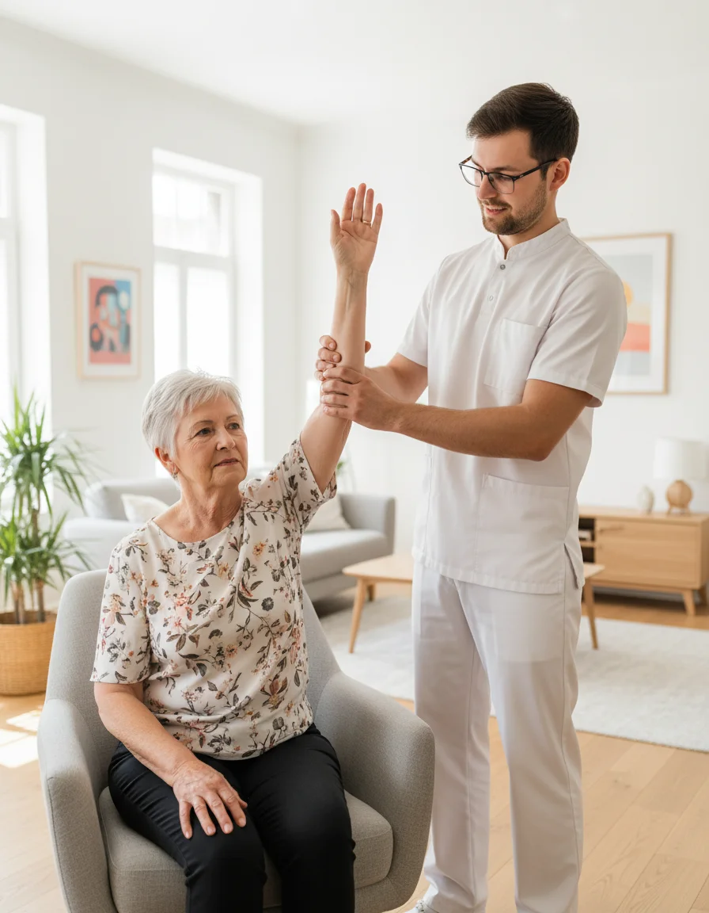

Pijn in de schouder wanneer u uw arm zijwaarts optilt, iets uit een hoge kast neemt of uw jas aantrekt? En wordt u 's nachts wakker wanneer u op die kant ligt? Dan is de kans groot dat u last heeft van schouder impingement, vandaag meestal subacromiaal pijnsyndroom genoemd. Het is een van de meest voorkomende schouderklachten bij volwassenen. Het goede nieuws: oefentherapie is de eerste en meest effectieve behandeling, en die kunt u grotendeels thuis uitvoeren. In dit artikel leest u wat er in uw schouder gebeurt, welke oefeningen helpen, hoe het herstel in fases verloopt en wanneer kinesitherapie aan huis een verschil maakt.
Kort samengevat
Bij schouder impingement raken de pezen van de rotator cuff en de slijmbeurs geïrriteerd onder het schouderdak. Gerichte oefeningen gedurende 6 tot 12 weken zijn de basis van de behandeling: eerst de pijn kalmeren, dan de schouderbladspieren en de rotator cuff versterken en ten slotte terug naar uw gewone activiteiten. Lichte pijn tijdens het oefenen mag, zolang ze de volgende dag weer gezakt is.
Wat is Schouder Impingement?
Het woord impingement betekent letterlijk inklemming. Lang dacht men dat de pezen van de schouder bij het heffen van de arm letterlijk klem kwamen te zitten tussen de kop van de bovenarm en het schouderdak (het acromion). Vandaag weten we dat het beeld genuanceerder is. Meestal gaat het om een overbelaste of geïrriteerde pees van de rotator cuff, vaak samen met een ontstoken slijmbeurs. Daarom spreken artsen en kinesitherapeuten nu liever van een subacromiaal pijnsyndroom.
Typische klachten zijn:
- Pijn bij het zijwaarts heffen van de arm, vooral tussen ongeveer 60 en 120 graden (de zogenaamde pijnlijke boog)
- Pijn bij reiken boven het hoofd, zoals haren kammen of iets uit de kast nemen
- Nachtpijn wanneer u op de pijnlijke schouder ligt
- Een zeurende pijn aan de buitenkant van de bovenarm, soms tot aan de elleboog
- Minder kracht bij het optillen of wegdraaien van de arm
Kunt u uw arm ook met hulp nauwelijks bewegen en is de schouder in alle richtingen stijf? Dan gaat het mogelijk om een frozen shoulder. Lees daarover meer in ons artikel over frozen shoulder thuis behandelen.
Oorzaken en Risicofactoren
Schouder impingement ontstaat zelden door één oorzaak. Meestal is het een combinatie van factoren die de belasting op de pezen groter maken dan wat ze aankunnen:
- Herhaald werk boven schouderhoogte, zoals schilderen, ramen wassen of tuinwerk
- Plots meer belasting, bijvoorbeeld een verhuis of een nieuwe sport
- Een zwakke rotator cuff of schouderbladspieren die het schouderblad onvoldoende sturen
- Een ingezakte houding met afhangende schouders en een gebogen bovenrug
- Leeftijd: vanaf ongeveer 40 jaar worden de pezen minder veerkrachtig
Ook na een periode van weinig bewegen, zoals na een ziekenhuisopname, kan de schouder gevoeliger worden. Bij ouderen gaat schouderpijn vaak samen met algemeen krachtverlies; lees daarover meer in ons artikel over krachtverlies en ouder worden.
Hoeveel Pijn Mag bij het Oefenen?
Veel patiënten durven niet te oefenen uit schrik dat ze hun schouder beschadigen. Toch is volledige rust meestal geen goed idee: een pees wordt sterker door haar geleidelijk te belasten. Kinesitherapeuten gebruiken daarom vaak een eenvoudige vuistregel:
- Pijn tot ongeveer 3 op 10 tijdens het oefenen is aanvaardbaar
- De pijn moet binnen een uur na het oefenen weer zakken naar het niveau van ervoor
- De volgende ochtend mag de schouder niet stijver of pijnlijker zijn dan gewoonlijk
Gaat u daarover, dan doet u de volgende keer minder herhalingen of gebruikt u een lichtere weerstand. Het verschil tussen actief en passief oefenen leest u in ons artikel over actieve en passieve revalidatie.

De Vier Fases van het Herstel
Het herstel van schouder impingement verloopt meestal in vier fases. De duur verschilt van persoon tot persoon; zie de weken hieronder als richtlijn, niet als vaste deadline.
pijnvrij bewegen
schouderbladcontrole
met elastiek
en dagelijkse taken
Oefeningen voor Thuis
Onderstaande oefeningen worden vaak gebruikt bij schouder impingement. Voer ze rustig uit, zonder schokken, en blijf binnen de pijnregel van hierboven. Twijfelt u of een oefening geschikt is voor u, overleg dan met uw kinesitherapeut.
| Oefening | Uitvoering | Dosering |
|---|---|---|
| Pendeloefening | Steun met de goede arm op een tafel, laat de pijnlijke arm ontspannen hangen en maak kleine cirkels door het lichaam licht te bewegen. | 1 minuut, 2–3× per dag (fase 1) |
| Schouderbladen samenbrengen | Zit rechtop, trek de schouderbladen zacht naar achteren en naar beneden, houd 5 seconden vast. | 10×, 2–3× per dag (fase 1–2) |
| Isometrische exorotatie | Elleboog in 90° tegen de zij, duw de rug van de hand zacht tegen een muur of deurstijl zonder te bewegen. | 5× 20–30 seconden (fase 1–2) |
| Exorotatie met elastiek | Elleboog tegen de zij met een handdoekrol ertussen, draai de onderarm naar buiten tegen de weerstand van een elastiek. | 3× 10–15 herhalingen (fase 3) |
| Muur opschuiven | Leg de onderarmen tegen de muur en schuif ze langzaam omhoog, terwijl de schouderbladen laag blijven. | 2× 10 herhalingen (fase 3–4) |
| Roeien met elastiek | Maak het elastiek vast aan een deurklink en trek de ellebogen naar achteren, schouderbladen samen. | 3× 12 herhalingen (fase 3–4) |
Raadpleeg uw arts bij:
- Schouderpijn na een val, met plots veel krachtverlies in de arm
- Een arm die u helemaal niet meer zelf kunt optillen
- Tintelingen of uitstraling tot in de vingers, of pijn die uit de nek lijkt te komen
- Koorts, een rode en warme schouder of onverklaard gewichtsverlies
- Pijn links in schouder en arm samen met kortademigheid of druk op de borst: bel 112
Tips voor het Dagelijks Leven
- Slaap niet op de pijnlijke kant. Ligt u op uw rug, leg dan een kussen onder de elleboog; op de goede zij helpt een kussen voor de borst om de arm op te laten rusten.
- Zet veelgebruikte spullen lager, zodat u minder vaak boven het hoofd moet reiken.
- Draag lasten dicht bij het lichaam en verdeel boodschappen over beide handen.
- Las korte pauzes in bij werk boven schouderhoogte of lang computerwerk.
- Blijf bewegen. Wandelen en algemene activiteit helpen ook de schouder. Gaat schouderpijn samen met een stijve nek, lees dan ook ons artikel over nekpijn en kinesitherapie aan huis.
Kinesitherapie aan Huis bij Schouderpijn
Oefeningen werken het best wanneer ze correct worden uitgevoerd en stap voor stap zwaarder worden. Een kinesitherapeut onderzoekt welke structuren in uw schouder geprikkeld zijn, kijkt hoe uw schouderblad beweegt en stelt een programma op maat op. Bij orthopedische revalidatie combineren we oefentherapie met uitleg over belasting, zodat u zelf leert inschatten wat uw schouder aankan.
PhysioVisit biedt kinesitherapie aan huis in de regio Grimbergen, Strombeek-Bever, Humbeek, Beigem en Koningslo. Dat is handig wanneer autorijden met een pijnlijke schouder moeilijk is, of wanneer u het liefst oefent in de omgeving waar u de beweging nodig heeft: aan uw eigen kast, aan uw eigen bed. Werd u al geopereerd aan de schouder? Lees dan ook ons artikel over revalidatie na een schouderoperatie.
Wanneer een operatie?
Een operatie waarbij ruimte onder het schouderdak wordt gemaakt, geeft bij de meeste patiënten geen beter resultaat dan goede oefentherapie. Ze wordt daarom pas overwogen wanneer de klachten na enkele maanden consequent oefenen niet verbeteren, of wanneer er een duidelijke scheur in de pees is. Bespreek dit altijd met uw arts.
Veelgestelde Vragen over Schouder Impingement
Hulp bij Schouderpijn aan Huis?
Onze kinesitherapeut komt bij u thuis in de regio Grimbergen en stelt een oefenprogramma op maat op om uw schouder pijnvrij en sterker te maken.
Conclusie
Schouder impingement is vervelend en kan uw nachtrust en dagelijkse bezigheden flink verstoren, maar de vooruitzichten zijn goed. Met geduld, de juiste oefeningen en een geleidelijke opbouw herstellen de meeste mensen zonder operatie. Kalmeer eerst de pijn, werk dan aan uw schouderblad en de rotator cuff en bouw ten slotte op naar bewegingen boven het hoofd.
Wilt u begeleiding bij uw oefenprogramma, in de vertrouwde omgeving van uw eigen woning? Neem contact met ons op voor een afspraak voor kinesitherapie aan huis. Lees ook onze artikels over revalidatie na een schouderprothese en de voordelen van kinesitherapie aan huis.